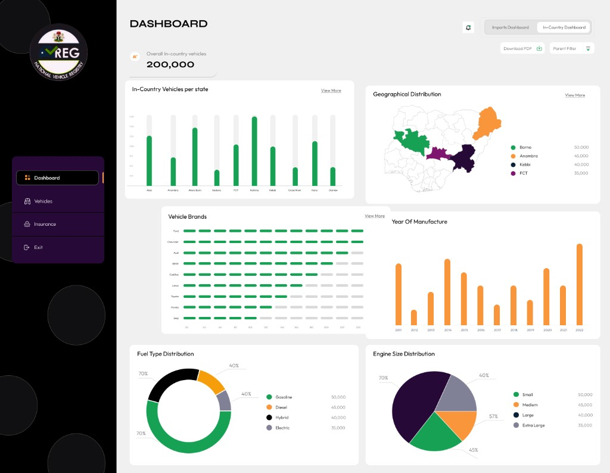
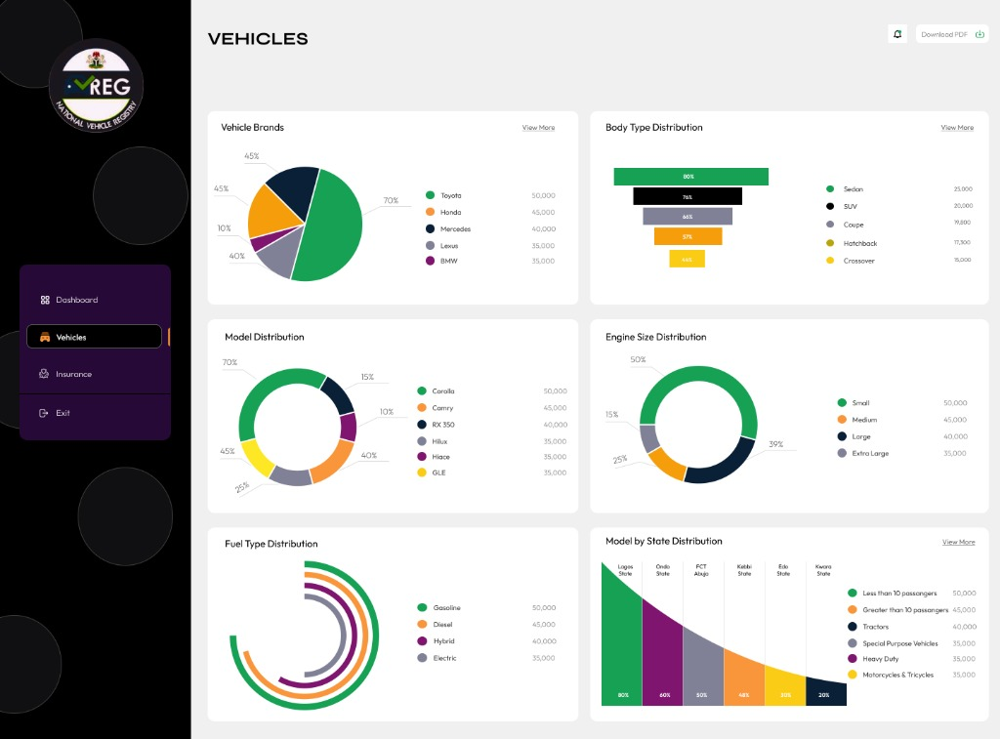
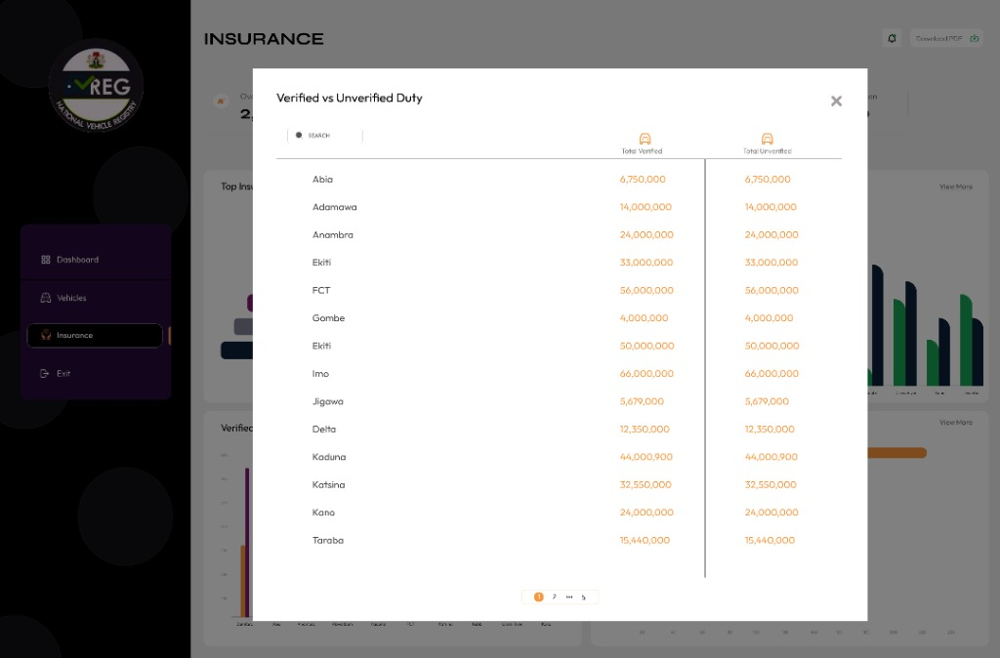

National Customs & Maritime Imports Cockpit
High-level operational cockpit for federal oversight displaying real-time vehicle daily ingestion meters (866 registered, 334 customs-cleared, 100K revenue units), global exporting continents tracking, and nationwide seaport/border ports of entry geographic mapping.

Nationwide In-Country Vehicle Registry & Geo-Analytics
Comprehensive census console tracking 200,000+ active in-country vehicles across Nigeria's 36 states and the FCT, with regional density mapping, manufacturer market penetration bars, and vintage manufacturing trajectory from 2011 to 2022.

Vehicle Classification, Engine & Fuel Analytics
Deep-dive fleet intelligence analyzing vehicle brand market shares (Toyota, Honda, Mercedes, Lexus, BMW), body type distribution funnels (Sedan, SUV, Coupe, Hatchback, Crossover), engine size classifications, concentric fuel-type adoption arcs, and state-by-state density.

State-Level Verified vs Unverified Duty Audit Modal
Targeted compliance modal allowing revenue inspectors and licensing officers to audit total verified versus unverified customs duty collections across federal states (FCT, Lagos, Rivers, Kano, Anambra, etc.) to halt tariff evasion at licensing points.

Agent Registration & Digital Certificate Directory
Enterprise workflow console for authorized maritime agents and freight forwarders, managing 200+ authenticated vehicle registration certificates with instant VIN lookup, invoice linkage, verified entity ownership, and certificate inspection actions.